Trinkwasser
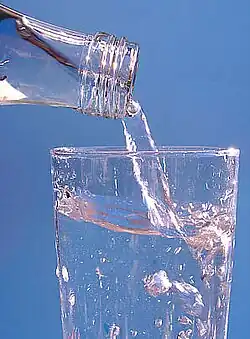
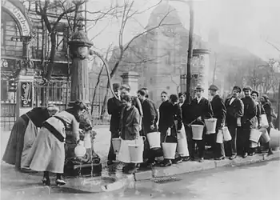
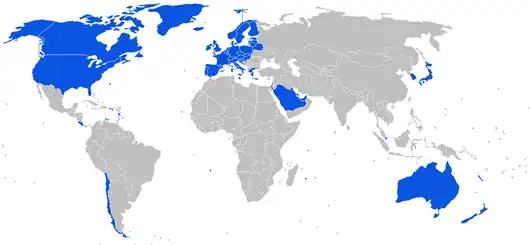
Trinkwasser ist Wasser für den menschlichen Bedarf. Trinkwasser ist das wichtigste Lebensmittel, es kann nicht ersetzt werden (Eingangs- und Leitsatz der DIN 2000). Daher ist es ein besonders zu schützendes Gut und ein Teil der Daseinsfürsorge.[2] Die Wasserbeschaffung, Aufbereitung und Verteilung von Trinkwasser ist Aufgabe der Wasserwirtschaft.
Definition und Anforderungen
Als Trinkwasser ist jedes Wasser definiert, das zum
- Trinken, zum Kochen, zur Zubereitung von Speisen und Getränken
oder insbesondere zu den folgenden häuslichen Zwecken bestimmt ist:
- Körperpflege und -Reinigung,
- Reinigung von Gegenständen, die bestimmungsgemäß mit Lebensmitteln in Berührung kommen (Gläser, Geschirr, Besteck) oder
- Reinigung von Gegenständen, die bestimmungsgemäß nicht nur vorübergehend mit dem menschlichen Körper in Kontakt kommen (Kleidung, Wäsche)[3]
Trinkwasser ist Süßwasser mit einem so hohen Reinheitsgrad, dass es – gemäß den definierten Güteanforderungen – für den menschlichen Gebrauch als geeignet eingestuft ist, insbesondere zum Trinken und zur Speisenzubereitung. Trinkwasser darf nur die Stoffe oder Organismen enthalten oder in bestimmten Mengen enthalten, für die es entweder keine Grenzwertfestlegungen gibt oder für die festgelegte Grenzwerte nicht über- oder unterschritten werden. Nicht enthalten sein dürfen z. B. krankheitserregende Mikroorganismen. Mineralstoffe sollten in einer Mindestkonzentration enthalten sein. Keine Grenzwertfestlegungen gibt es für viele chemische Schadstoffe (s. Schadstoffbelastung). Anforderungen der Keimfreiheit am Entnahmeort (Verbraucher) erzwingen unter bestimmten Bedingungen (Gewinnungsort, Leitungslänge) dauerhafte oder bedarfsgerechte Desinfektionsmaßnahmen, was (etwa durch Chlorungsverfahren) innerhalb o. g. Grenzwerte chemische Kontamination impliziert.
Die Güteanforderungen an Trinkwasser sind in Deutschland in der DIN 2000, in der Trinkwasserverordnung (TrinkwV) und in der „Allgemeinen Verordnung für die Versorgung mit Wasser“ (AVBWasserV) festgelegt.[4]
Wasser ist in Deutschland kein Mangelartikel und kann in ausreichenden Maß dem Wasserdargebot entnommen werden. Im Gegensatz zu anderen natürlichen Ressourcen wird Wasser nicht verbraucht, sondern nur gebraucht. Es kann dabei verunreinigt werden und ist dann eventuell mit Schadstoffen belastet. Die gesamte Wassermenge der Erde in allen Aggregatzuständen bleibt gleich, lediglich die Verteilung zwischen den Umweltkompartimenten ändert sich. Nur eine äußerst geringe Menge des Wassers entweicht als Wasserdampf aus der Lufthülle in das Weltall.
Wasserbedarf
Der Wasserbedarf des Menschen variiert je nach körperlicher Verfassung, Körpermasse, Aktivität, Umgebungstemperatur, Umgebungsluftfeuchtigkeit und anderen Faktoren. Der Mensch nimmt Wasser in Form von Getränken und Speisen zu sich und gibt es mit Urin, Kot, Schweiß und Atemluft ab. Wasser entsteht im Körper beim oxidativen Abbau von organischen Nahrungsstoffen.
Die WHO gibt bei „hohem Bedarf“ eine Trinkwasserbedarfsschätzung von etwa zwei Litern je Tag für einen 60 kg schweren Erwachsenen und von einem Liter für ein Kind mit 10 kg Körpergewicht an.[5] Der Flüssigkeitsbedarf kann ergänzend durch Trinken ausreichender Mengen von Saft, Milch oder Kaffee gedeckt werden und variiert individuell stark.[6][7]
Leitungswasser wird zudem für weitere Zwecke, wie Wäschewaschen, Toilettenspülung, Körper-, Geschirr- und Wohnungsreinigung verwendet. In den letzten Jahrzehnten wurde mit einem Verbrauch an Trinkwasser von 120 bis 140 Liter pro Tag und Einwohner gerechnet. Der Pro-Kopf-Verbrauch von Trinkwasser ist in Deutschland laut einer Statistik des Bundesverbands der Energie- und Wasserwirtschaft e. V. (BDEW) durch einen bewussten Umgang mit Wasser seit 1990 kontinuierlich gesunken.
In anderen Ländern ist der Verbrauch teilweise weitaus höher. Der Gesamtwasserverbrauch in Italien wird mit 260 Litern pro Tag und Einwohner angegeben. In der Wüstenstadt Dubai, wo Trinkwasser üblicherweise durch Meerwasserentsalzung hergestellt wird, lagen in den 2010er Jahren die Werte pro Kopf bei über 500 Liter je Tag für den gesamten Verbrauch. Dort wird ebenso wie für den hohen Stromverbrauch eine Verbrauchssenkung angestrebt.[8][9]
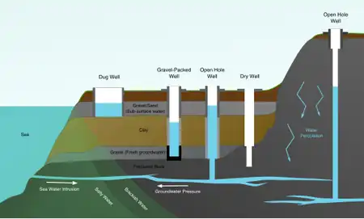
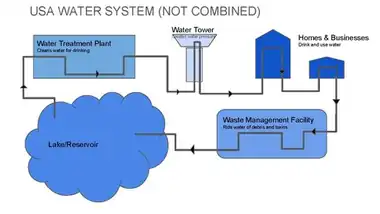
Quellen
Trinkwasser wird dem Wasserdargebot entnommen und kann aus verschiedenen Quellen gewonnen werden:
- Hyporheische Zonen und Grundwasserleiter mittels Brunnen
- Niederschlag, einschließlich Regen, Hagel, Schnee, Nebel usw.
- Oberflächenwasser wie Quellen, Flüsse, Bäche und Gletscher
- Meerwasser (entsalzt)
- Biologische Quellen wie Pflanzen
- Wasserversorgungsnetze
- Atmosphärische Wassererzeuger[10]
- Urin, feuchte Abfälle, Abluft und feuchter Boden – durch Destillation
Zu den Bedrohungen für die Verfügbarkeit von Wasserressourcen gehören: Wasserknappheit/Wasserkrisen, Wasserverschmutzung, fehlende Aufbereitung oder Wasserfilter, Wasserkonflikte, unzureichende Brunnentiefe, Dürreperioden und Überförderung[11] sowie der Klimawandel.
Qualität des Trinkwassers
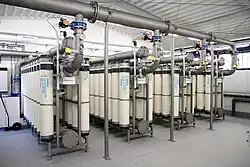
In Deutschland,[12] Österreich, der Schweiz, Frankreich und den Niederlanden ist Trinkwasser das am intensivsten kontrollierte Lebensmittel und im Normalfall uneingeschränkt zum Verzehr geeignet.
Probleme bei der Qualität des Trinkwassers aus Grundwasser können in der Regel durch die ordnungsgemäße Ausweisung von Schutzgebieten vermieden werden. Teilweise ist die Unterschutzstellung in Gebieten mit intensiver konventioneller landwirtschaftlicher Nutzung jedoch nicht ausreichend. Insbesondere durch zu starke Gülledüngung oder durch alte Kläranlagen und den dadurch verursachten Nitrateintrag in das Grundwasser kann das daraus gewonnene Trinkwasser für Säuglinge und Kleinkinder gefährlich sein. In diesen Fällen muss der Wasserversorger die Nitratkonzentration durch Aufbereitung, tiefere Brunnen und Kooperationen mit der Landwirtschaft senken.
Wasser aus Uferfiltrat kann Schadstoffe aus Kläranlagen oder Industrieeinleitungen enthalten. Schadstoffe können im „Normalbetrieb“ oder durch Unfälle in Gewässer gelangen. Wasserversorger an den großen Flüssen Deutschlands sind zu Vorfeldkontrolle und zur Bereitstellung redundanter Techniken zur Wasseraufbereitung übergegangen. Medikamente und andere pharmakologisch wirksame Stoffe, beispielsweise Röntgenkontrastmittel oder Sexualhormone, können durch den Wasserkreislauf in das Trinkwasser gelangen und zu systemischen Risiken führen.
Für Trinkwasser bestehen im deutschsprachigen Raum höhere Qualitätsanforderungen als für industriell abgepacktes Mineralwasser und Tafelwasser. Es gilt als das am besten untersuchte Lebensmittel. Trinkwasser und Tafelwasser muss im Gegensatz zu natürlichem Mineralwasser nicht „ursprünglich rein“ sein, darf also aufbereitet und vermischt werden. So darf mit Kohlenstoffdioxid versetztes Trinkwasser – unabhängig von Qualität und Mineralstoffgehalt – in Gaststätten nicht als Mineralwasser angeboten werden.
In anderen Ländern ist die Trinkwasserqualität mangels Aufbereitung und Überwachung häufig schlechter. In beliebten Urlaubsgebieten wie Spanien und Portugal variiert angeblich teilweise die Qualität des Leitungswassers von „als Trinkwasser geeignet“ bis „beim Verzehr in großen Mengen gesundheitsgefährdend“.[13] In China sind 60 bis 80 Prozent des Grundwassers schwer verschmutzt und nicht mehr als Trinkwasser geeignet.[14][15] In Europa ist das Trinkwasser in aller Regel zum Kochen geeignet.
Durchschnittliche Zusammensetzung
Die am häufigsten im Trinkwasser gelösten Mineralstoffe sind die Kationen Calcium (Ca2+), Magnesium (Mg2+) und Natrium (Na+) und die Anionen Carbonat (CO32−), Hydrogencarbonat (HCO3−), Chlorid (Cl−) und Sulfat (SO42−). Die Summe der Konzentrationen von Calcium und Magnesium wird als Wasserhärte bezeichnet.
Schadstoffbelastung
In Einzelfällen können erhöhte Belastungen des Trinkwassers mit Schadstoffen (beispielsweise Arsen, Barium, Blei, Cadmium, Chlorid, Eisen, Kupfer, Nitrat, Phosphat, Uran, Zink) beim Endverbraucher vorkommen.[16] Im März 2013 berichtete das ZDF über erhöhte Belastung des Trinkwassers mit chemischen Abfällen wie Antibiotika, Pestiziden oder Desinfektionsmitteln.[17] In der Ostschweiz wurden 300 Trink- und Grundwasserproben genommen, in denen sich zeigte, dass der offizielle Höchstwert des krebserregenden Pestizids Chlorthalonil in über 10 % der Proben überschritten wurde.[18] Arzneistoffe sind ebenfalls zu finden.[19] Grenzwerte legt (in Deutschland) die Trinkwasserverordnung fest, doch für viele Schadstoffe existieren noch keine Grenzwertfestlegungen.[20]
Zum Schutz der Trinkwasserquellen wurden die Gefahrenklassen PMT und vPvM eingeführt.[21]
Blei
Verantwortlich für erhöhte Bleianteile im Trinkwasser können alte Bleileitungen in der Hausinstallation sein. Die Stiftung Warentest fand bei der Auswertung von 20.000 Trinkwasseranalysen aus dem Zeitraum von 1994 bis 2004, aus Zapfhähnen in Haushalten, bei fünf Prozent der Proben mehr als 25 Mikrogramm je Liter (µg/l) Blei. Ein erhöhtes Risiko bestand demnach in ostdeutschen Regionen, in Schleswig-Holstein und in den Großräumen Hamburg, Bremen, Bonn und Frankfurt.[22] Der Grenzwert gemäß TrinkwV liegt bei 10 µg/l. Trinkwasseranalysen können klären, ob die eigene Hausinstallation betroffen ist.
Mit Stand 2021 werden in den USA bis zu 20 Millionen Menschen mit Wasser aus Bleileitungen versorgt.[23][24]
Arsen und Fluorid
Weltweit beziehen rund 300 Millionen Menschen ihr Wasser aus Grundwasservorräten. Rund 10 Prozent der Grundwasserbrunnen sind jedoch mit Arsen oder Fluorid kontaminiert. Diese Spurenstoffe sind meist natürlichen Ursprungs und werden vom Wasser aus Felsen und Sedimenten ausgewaschen. Im Jahr 2008 präsentierte das Schweizer Wasserforschungsinstitut Eawag eine neue Methode, mit der sich Gefahrenkarten für geogene Giftstoffe im Grundwasser erstellen lassen, ohne dass sämtliche Brunnen und Grundwasservorräte einer Region dafür überprüft werden müssen.[25][26][27]
2016 machte die Eawag ihr Wissen auf der Grundwasser Assessment Plattform (GAP) frei zugänglich.[28] Dieses Internetportal bietet Behördenmitgliedern, Mitarbeitern von NGOs und anderen Fachleuten die Möglichkeit, eigene Messdaten hochzuladen und Risikokarten für Gebiete nach freier Wahl zu erstellen.
Uranbelastung
Deutschland
Die Verbraucherorganisation Foodwatch warnte 2008 vor hohen Urankonzentrationen, so wurden 39 µg/l Uran in Maroldsweisach im Landkreis Haßberge (Bayern), 33 µg/l in Lobenrot im Landkreis Esslingen und 30,08 µg/l in Reimershagen im Landkreis Rostock (Mecklenburg-Vorpommern) ermittelt. Insgesamt liegen bei 8200 gemeldeten Messungen 150 oberhalb von 10 µg/l vor, dem Grenzwert der novellierten TrinkwV von 2011.[29] Im Durchschnitt enthält Trinkwasser in Deutschland mit 0,3 µg/l Uran weniger Uran als Mineralwasser mit durchschnittlich 2,8 µg/l.[30] Der Zusammenhang erhöhter Urangehalte in Mineral- und Trinkwässern mit der Geologie der Grundwasserspeichergesteine wurde 2008 erstmals bundesweit untersucht.[31] Dabei stellte sich heraus, dass erhöhter Urangehalt an Formationen wie Buntsandstein oder Keuper gebunden sind, die geogen selbst erhöhte Urangehalte aufweisen. Örtlich ist Uran aus Phosphatdünger in das Grundwasser durchgeschlagen.
Schweiz
Im Rahmen eines Monitorings durch das Bundesamt für Gesundheit (BAG) wurde in den 2000er-Jahren unter anderem der Urangehalt des Trinkwassers auf Basis von 5000 Proben in der Schweiz untersucht. Die Ergebnisse wurden wissenschaftlich aufgearbeitet.[32] Hierbei wurde festgestellt, dass höhere Konzentrationen vor allem im Alpenraum festgestellt worden sind, falls das Wasser aus Grund- oder Quellwasser gewonnen wird, das „in Kontakt mit uranhaltigen Gesteinen und Sedimenten steht.“ In 0,3 % der Proben wurde der WHO-Richtwert von 30 µg/l überschritten.[33] Basierend auf die Untersuchungsergebnisse wurde in der TBDV ein Grenzwert von 30 µg/l festgeschrieben.[34]
Biologische Belastungen
Trinkwasser kann in einzelnen Fällen die Quelle epidemischer Krankheitsausbrüche durch enterale pathogene Viren sein. So wurde in Finnland in den Jahren 1998 bis 2003 eine Studie über trinkwasserbedingte Norovirus-Ausbrüche durchgeführt. Dabei konnten bei 10 von 18 Norwalk-Virus-Ausbrüchen die nachgewiesenen Subtypen in den Stuhlproben der Patienten, wie in den entsprechenden Trinkwasserproben nachgewiesen werden.[35] Dies sind Ausnahmen, die regional sehr begrenzt auftreten und die umgehend durch Sanierung behoben werden. Weit über 99 % des in Deutschland abgegebenen Trinkwassers sind gemäß Bundesgesundheitsamt und Umweltbundesamt ohne Beanstandungen.
Preis des Trinkwassers
Deutschland
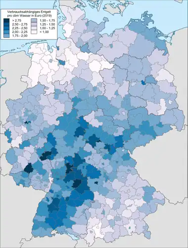
Der Preis für Trinkwasser in Deutschland ist regional sehr verschieden. Die Kosten für die Trinkwasserversorgung werden überwiegend von den hohen Fixkosten bestimmt. Der Löwenanteil bezieht sich dabei auf Kosten für den Erhalt und die Weiterentwicklung der Infrastruktur. In den Fixkosten enthalten sind die Kosten für Gewinnung, Aufbereitung (wenn erforderlich), Speicherung, Förderung (Pumpen), Transportleitungen, innerörtliche Versorgungsleitungen (Anschlussdichte, d. h. Abnehmer pro km Versorgungsleitung) und Wasserzähler, die auch ohne Verbrauch anfallen. Diese Kosten werden zudem von den geologischen und topografischen Verhältnissen, von der Siedlungsstruktur und der Sanierungsrate der Versorgungsleitungen beeinflusst. Üblicherweise werden diese Fixkosten auf die Verbrauchskosten umgelegt. So kostet Trinkwasser in Deutschland Anfang 2019 im Mittel etwa 1,72 Euro pro Kubikmeter. Der Fixkostenanteil in der Wasserversorgung beträgt im Mittel zwischen 75 % und 85 % der Gesamtkosten, somit kann Wassersparen auf die Gesamtgruppe der angeschlossenen Verbraucher gesehen kaum zu geringeren Kosten für die Verbraucher führen.[36] Abwassergebühren werden zumeist 1:1 nach dem Trinkwasserbezug des Privathaushalts taxiert, wofür etwa zwei bis vier Euro pro Kubikmeter hinzukommen.
2007 und 2011 ermittelten Studien in Essen einen etwa 340 % höheren Preis als in Augsburg. In Essen ist das Wasser doppelt so teuer wie im benachbarten Bochum. Als Ursache für die Preisunterschiede werden unterschiedliche Voraussetzungen (Rohwasserherkunft, Rohwasserqualität, Aufbereitungskosten, Topografie, Infrastrukturkosten) bei den Wasserversorgern genannt.[37]
Unabhängig von den zeitweisen Perioden mit zu wenig Regen ist in vielen Wirtschaftsbereichen die Entnahme von Millionen Kubikmeter an Grundwasser in Thüringen und Hessen kostenlos; in den anderen Bundesländern kostet 1 Kubikmeter maximal 0,31 Euro. Gefordert wird, dass Grossverbraucher wie Industrieunternehmen, Landwirtschaft, Energieversorger und Getränkehersteller deutlich höhere Beträge für das Allgemeingut Trinkwasser entrichten.[38]
Schweiz
Der Trinkwasserpreis wird primär durch die Gewinnungsart und den Transport bestimmt, der von Ort zu Ort unterschiedlich ist. Die Wasserkorporationen bzw. die dafür zuständigen Gemeinden legen zudem fest, inwieweit kommende Investitionen bzw. deren Amortisation im Preis zu berücksichtigen sind.[39] Daraus resultierend legt jede Wasserkorporation bzw. Gemeinde für die jeweiligen Versorgungsgebiete die Trinkwasserpreise fest. In St. Gallen, das Seewasser aus dem Bodensee bezieht und entsprechend hinaufgepumpt werden muss, kostet per 2017 der Kubikmeter 2.66 Fr.,[40] während das Grund- und Quellwasser in Altdorf 0.40 Fr. kostet.[41] Hinzu kommen Gebühren für den Anschluss, für den Wasserzähler sowie für das Abwasser.
Auf der Website des Eidgenössischen Preisüberwachers können die Wasserkosten zu den 300 einwohnergrössten Gemeinden eingesehen werden.[42]
Hygienische Aspekte
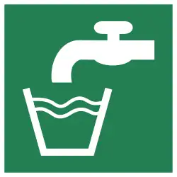
Eine sichere und hygienische Wasserversorgung ist ein entscheidender Beitrag zur Gesundheit und Seuchenvermeidung. Trinkwasser muss in Deutschland gemäß der Trinkwasserverordnung (TrinkwV) die folgenden Anforderungen erfüllen:
- farblos, geruchlos
- frei von Krankheitserregern
- nicht gesundheitsschädigend
- geschmacklich neutral und kühl
- gelöste mineralische Stoffe in bestimmten Konzentrationsbereichen
Trinkwasser wird in Mitteleuropa zumeist aus Grundwasser durch Brunnen, seltener Artesische Brunnen oder direkt aus Quellen gewonnen. Auch Oberflächenwasser aus Talsperrseen, Seen oder Flüssen wird verwendet. Dabei wird das Wasser entweder direkt aus dem Gewässer entnommen oder als Uferfiltrat aus Brunnen in Gewässernähe zu Trinkwasser aufbereitet. In Einzelfällen, meist im außereuropäischen Raum, wird es direkt aus Flusswasser gewonnen. Der Transport zum Verbraucher erfolgt in Industriestaaten zumeist durch ein Wasserverteilungssystem aus Pumpen, Leitungen und Behältern. In vielen Entwicklungs- und Schwellenländern sowie manchmal in Notsituationen in Industriestaaten wird es durch Tankwagen oder Gebinde wie Flaschen, Fässer und Kunststoffsäcke verteilt.
Eine wichtige Richtlinie für Trinkwasseranlagen in Deutschland ist die VDI 6023. Sie beschäftigt sich mit korrekter Planung, Errichtung, Betrieb und Instandsetzung von Trinkwasseranlagen in Gebäuden und auf Grundstücken. Da Trinkwasser in Zuleitungen vor den Zapfstellen zwischenzeitlich nicht fließt, können sich bei längerer Stagnationszeit in den Wasserleitungen mehr Mikroorganismen entwickeln, in höherer Konzentration als dies nach der Trinkwasserverordnung zulässig ist. Wasser, das über längere Zeit in einer Armatur oder Rohren aus Rotguss stand, kann einen höheren Gehalt gelöster Metalle wie etwa Blei aufweisen.
Organisation der Trinkwasserversorgung
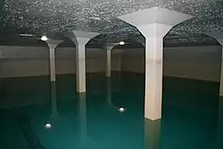
Deutschland, Österreich und die Schweiz sind aufgrund ihrer geographischen Lage und Niederschlagssituation so wasserreich, dass der Wasserbedarf meist lokal oder regional gedeckt werden kann. In vielen Fällen sind aber in Mitteleuropa regionale und überregionale Flächenversorgungen (zum Beispiel Gelsenwasser oder Suez Environnement) aufgebaut worden. Die Errichtung, Erhaltung und der Betrieb von Wasserversorgungsanlagen erfolgt in den meisten Bundesländern durch Kommunen, Unternehmen, Wassergenossenschaften, Wasserverbände und durch privatwirtschaftlich organisierte Unternehmen. Anders als in anderen europäischen Ländern, wie in den Niederlanden, wo teilweise Konzentrationsprozesse staatlich beschleunigt wurden, ist in Deutschland die öffentliche Wasserversorgung bisher überwiegend kommunal geprägt und entsprechend den örtlichen Vorkommen organisiert.
Nur wenige der deutschen Versorgungsunternehmen sind überregional und noch weniger international tätig. Die großen französischen Versorgungsunternehmen sind weltweit an der Privatisierung der Wasserversorgung aktiv beteiligt.
Trinkwassergewinnung
Etwa 25 % der Weltbevölkerung sind auf Wasser aus Karst-Aquiferen angewiesen.[43] Das Institut für angewandte Geowissenschaften am Karlsruher Institut für Technologie (KIT) veröffentlichte als Projekt der IAH Karst Commission (International Association of Hydrogeologists)[44] im September 2017 auf dem 44. jährlichen Kongress der IAH in Dubrovnik in Ergänzung der 2000 veröffentlichten Grundwasser-Weltkarte (WHYMAP, World-wide Hydrogeological Mapping and Assessment Programme)[45] zusammen mit dem Federal Institute for Geosciences and Natural Resources (BGR) und der UNESCO eine „Weltkarte der Karst-Grundwasserleiter“ (World Karst Aquifer Map).[46]
Gewinnung aus Brunnen
Bei Brunnen werden generell zwei verschiedene Arten unterschieden, nämlich der Schachtbrunnen und der Bohrbrunnen. Mit einem Schachtbrunnen wird oberflächennahes Grundwasser meist zwischen 8 und 10 Meter unter Gelände gewonnen. Mit einem Bohrbrunnen wird das Grundwasser in Tiefen bis zu 400 Meter bezogen.
Die Brunnentiefe ist abhängig von der Lage und Mächtigkeit der wasserführenden Schichten. Jeder Brunnen hat eine maximale Förderkapazität, die abhängig ist von der Größe des Grundwasserleiters, dessen Durchlässigkeit und dem entsprechenden Brunnenausbau, wie Brunnen- und Filterrohrdurchmesser und der Länge der Brunnenfilterstrecken. Unterwasserpumpen fördern das Wasser zur Aufbereitung oder bei brauchbarer Qualität direkt ins Trinkwasserleitungsnetz. Die Anzahl der Brunnen richtete sich nach den Mengenanforderungen der Verbraucher und der Wasserbilanz, sie ist je Wassergewinnungsgebiet behördlich beschränkt, damit aus einem Gebiet nur die jeweils nachfließende Menge entnommen wird.
Da Schachtbrunnen nicht in große Tiefen reichen, kann die Qualität des Wassers durch die Nähe zur Erdoberfläche beeinträchtigt sein. Beim Bohrbrunnen (Tiefbrunnen) wird ein Förderrohr eingehängt, das im wasserführenden Bereich Schlitze hat. Um Sand, Erde und andere grobe Schwebeteilchen zurückzuhalten, wird um das Rohr herum eine Filterkiespackung angebracht. Über der Erde mündet das Förderrohr in der Brunnenstube, in dem die erforderlichen elektrischen und hydraulischen Einrichtungen untergebracht sind.
Mit zunehmender Tiefe steigt die Temperatur des Wassers aus Tiefbrunnen (geothermische Tiefenstufe), und zwar im Mittel um 3 °C pro 100 m, falls keine geothermische Anomalie (wie im Oberrheingraben) vorliegt, die einen größeren Anstieg bewirkt. Bei einer angenommenen Jahresdurchschnittstemperatur auf der Erdoberfläche von 10 °C beträgt die Wassertemperatur demnach in 100 m Tiefe ca. 13 °C.
Gewinnung aus Quellen
Quellwasser ist zutage tretendes Grundwasser. Seine Eignung als Trinkwasser hängt davon ab, ob oberflächennahes Grundwasser oder Wasser aus tieferen Schichten zutage tritt. Wird die Quelle überwiegend durch oberflächennahes Wasser (Tagwasser) gespeist, besteht die Gefahr, dass Umweltschadstoffe, Keime, Bakterien, Nitrat oder Mineralöle in das Quellwasser gelangen. Daher muss jede Quelle, die für die Trinkwassergewinnung herangezogen wird, durch eine entsprechend große Trinkwasserschutzzone abgesichert sein.
Für die Trinkwassergewinnung sind folgende Quelltypen relevant:
- Schichtquelle: Das Grundwasser tritt zutage, wenn die Wasser führende Schicht die Erdoberfläche schneidet.
- Stauquelle: Grundwasser staut sich unter einer wasserundurchlässigen Schicht und tritt bei einem Durchbruch dieser Schicht an die Erdoberfläche.
- Überlaufquelle: Das Grundwasser wird durch hydraulischen Druck in der Grundwasserschicht an die Erdoberfläche gedrückt.
Gewinnung aus Oberflächengewässern
Oberflächenwasser wird zur Trinkwassergewinnung aus Seen oder Flüssen gepumpt. Es muss zumeist aufbereitet werden. Bekannte Beispiele sind die überregionale Bodensee-Wasserversorgung, die Wasserversorgung der Stadt Zürich oder die zahlreichen Wasserversorgungsanlagen, die das Rohwasser aus Talsperren entnehmen.
- Meerwasser
In wasserarmen Küstenländern wird Trinkwasser meist durch energieintensive Meerwasserentsalzungsanlagen gewonnen, üblicherweise durch Umkehrosmose. Der Energieaufwand beträgt 4 bis 9 Kilowattstunden pro Kubikmeter Wasser. Bei einer Destillation bei Atmosphärendruck ohne Energierückgewinnung, würde er mit 700 Kilowattstunden weit darüber liegen.
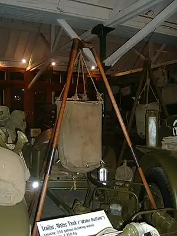
Trinkwasseraufbereitung
Trinkwasseraufbereitung ist die Gewinnung von Trinkwasser durch Reinigung von Grund- oder Oberflächenwasser mittels chemischer und physikalischer Aufbereitungsverfahren und die Einstellung von bestimmten Parametern (pH-Wert, Ionenkonzentration), um es für den Gebrauch als Trinkwasser geeignet zu machen.[47] Die für die Aufbereitung nötige Technologie ist in Wasserwerken installiert. Trinkwasser in einzelnen Haushalten, die nicht an ein Wasserwerk angeschlossen sind oder deren Leitungswasser nicht als Trinkwasser geeignet ist, wird häufig mit kleineren Geräten aufbereitet.[48] Die Art der Wasseraufbereitung hängt in beiden Fällen von der Güte des Rohwassers ab und richtet sich nach den im Rohwasser enthaltenen und zu entfernenden Stoffen. Insbesondere die Verfahren Filtration, Enteisenung und Entmanganung, Entsäuerung, Entgasung, Entcarbonisierung und Desinfektion werden häufig angewendet.
Basisbehandlungen
Im Wasser enthaltene Schwebstoffe können durch Flockung zu voluminöseren Teilchen aggregiert und durch Filtration mit Kiesfiltern, Sandfiltern oder Polstofffiltern aus dem Wasser entfernt werden. Durch Belüftung wird korrosives Kohlenstoffdioxid ausgeblasen. Durch Oxidation werden gelöste Eisen(II)-Ionen zu unlöslichem Eisen(III)-oxidhydrat überführt und gelöste Mangan(II)-Ionen zu unlöslichen Mangan(IV)-Verbindungen. Die Eisenoxidation ist zum Teil abiotisch, zum Teil biotisch. Die biotische Oxidation wird durch Bakterien der Gattung Gallionella, im Wesentlichen G. ferruginea, bewirkt. Die Manganoxidation verläuft langsamer als die Eisenoxidation und ist ebenfalls zum Teil biotisch (spezifische Mangan-oxidierende Bakterien). Das ausgefallene Eisen(III)-oxidhydrat wird zum größten Teil in einer ersten Filtrationsstufe durch Kiesfilter entfernt (Enteisenung). In diesen Filtern befinden sich große Mengen an Gallionella ferruginea. Die ausgefällten Mangan(IV)-Verbindungen werden im unteren Drittel des kombinierten Enteisenungs- und Entmanganungsfilters bzw. in einer zweiten Filtrationsstufe mit Kiesfiltern entfernt.
Organische Verunreinigungen und Spurenstoffe
Spurenstoffe und andere gelöste organische Stoffe werden durch Adsorption an Aktivkohle und durch biologischen Abbau in Langsamfiltern oder durch Bodenpassage (Versickerung) entfernt. Oberflächennahe Grundwässer, wie Uferfiltrate von Flüssen, werden häufig mit Ozon behandelt. Durch diese Behandlung werden sowohl organische Stoffe als auch Eisen- und Manganverbindungen oxidiert. Während Eisen als Oxidhydrat ausgefällt wird, oxidiert Mangan bis zum Permanganat. Für die nachfolgende Filtration eines derartig mit Ozon behandelten Wassers werden deshalb 2-Schichtfilter oder Doppelschichtfilter verwendet. Bei den 2-Schichtfiltern besteht die untere Schicht aus Kies, in der ungelöste und ausgefällte Bestandteile abfiltriert werden, soweit diese nicht von der oberen ersten Schicht bereits aufgenommen wurden. Die 2. obere Schicht besteht aus grobkörniger Aktivkohle. Diese Schicht adsorbiert die anoxidierten organischen Stoffe und reduziert das Permanganat zu ausgefällten Mangan(IV)-Verbindungen, die abfiltriert werden können. Bei den Doppelstockfiltern kann durch die räumliche Trennung das spezifisch schwerere Filtermaterial wie Aktivkoks oder Kies im oberen und die leichtere Aktivkohle im unteren Filterteil angeordnet werden. Hierdurch wird bei den Doppelstockfiltern eine schnellere Verschlammung der Aktivkohle durch die Abfilterung von Feststoffen vermieden. Bei der Filterrückspülung (Ausspülung der Ablagerungen) wird die spezifisch leichtere Aktivkohle immer wieder als oberste Filterschicht abgelagert.
Eine Entfernung der Spurenstoffe durch technische Verfahren der Trinkwasseraufbereitung ist schwer oder erhöht den Aufwand bei der Aufbereitung erheblich. Um die Trinkwasserressourcen allgemein zu schützen und die Wasserwerke zu entlasten, werden zunehmend Vierte Reinigungsstufen zur Beseitigung von Spurenstoffen auf Kläranlagen installiert.[49] Damit können allerdings nur Punkteinträge minimiert werden. Diffuse Eintragspfade wie zum Beispiel Pflanzenschutzmittel aus der Landwirtschaft können so nicht verringert werden.
Desinfektion
Ist mit pathogenen Bakterien und Viren zu rechnen, so ist eine Desinfektion erforderlich. Diese kann durch Ultrafiltration im Wasserwerk oder durch Ozonierung erfolgen. Nach einer Filtration kann durch Zusatz von Chlor, Chlordioxid oder Natriumhypochlorit (Chlorung) eine Transportchlorung vorgenommen werden, um eine Wiederverkeimung im Netz zu verhindern.
Enthärtung
Wasser mit hoher Carbonathärte muss für viele Zwecke durch Entcarbonatisierung teilenthärtet werden. Bei membranfiltriertem Wasser müssen, je nach verwendeter Porenstärke, Stoffe wie Mineralien hinzugesetzt werden, um eine ausreichende Osmolarität zu erreichen.[50] Eine in Deutschland häufig eingesetzte Technik zur Enthärtung von Trinkwasser ist das CARIX-Verfahren.
Entsalzung
Für die Gewinnung von Trinkwasser aus salzreichem Rohwasser werden Anlagen nach dem Prinzip der Umkehrosmose verwendet. Grundwasser ist meist von so guter Qualität, dass es ohne Flockung und Desinfektion zu Trinkwasser aufbereitet werden kann. Weitergehende Verfahren der Trinkwasseraufbereitung sind Enthärtung und Teilentsalzung mit Hilfe von Ionenaustauschern oder der Membrantechnik wie Osmose und Dialyse. Ein Anteil an Uran kann durch den Einsatz von Ionenaustauschern aus dem Trinkwasser entfernt werden, es sind Verfahren auf dem Markt.
Rechtsfragen
In Deutschland und in Österreich wird die Beschaffenheit des Trinkwassers durch die Trinkwasserverordnung (TrinkwV) geregelt. Mit Novellierungen dieser Verordnungen wurde die Richtlinie 98/83/EG „Über die Qualität von Wasser für den menschlichen Gebrauch“ in nationales Recht umgesetzt. In Österreich wurde die entsprechende Novelle der Trinkwasserverordnung am 21. August 2001 verkündet und in Deutschland ist sie am 1. Januar 2003 in Kraft getreten. Die Einhaltung der Trinkwasserverordnung durch den Wasserversorger wird von den Gesundheitsämtern kontrolliert.
In Deutschland ist für die Normung und Zulassung von Verfahren und Materialien im Bereich des Trinkwassers der DVGW e. V. zuständig. Die Zuständigkeiten umfassen alle Aspekte der Trinkwasseraufbereitung, Speicherung und Verteilung und haben einen bindenden Charakter, ähnlich einer DIN-Norm.[51]
Die WHO hat eine Norm für Trinkwasser erstellt, an der sich die EU-Richtlinie und die TrinkwV orientieren. In diesen Verordnungen werden unter anderem die zu prüfenden Stoffe im Trinkwasser und die zugehörigen zulässigen Grenzwerte sowie die Häufigkeit der durchzuführenden Messungen festgelegt. Die Grenzwerte, die es erlauben, ein Wasser als Trinkwasser freizugeben, sind am Gedanken der Gesundheitsförderung (Vorsorgeprinzip) orientiert. Ein Problem ist dabei, dass durch die Analysen nicht alle denkbaren oder bekannten Belastungen erfasst werden. Im Wasser können leicht 1500 Stoffe anthropogenen Ursprungs gefunden werden. Die WHO verlangt von 200 Stoffen wegen ihrer bekannten Auswirkung auf die Gesundheit, dass sie geprüft werden. Nach der deutschen TrinkwV sind insgesamt nur 33 möglicherweise im Wasser befindliche Stoffe mit zugehörigen Grenzwerten genannt, die bei einer vollständigen Trinkwasseruntersuchung geprüft werden müssten. Allerdings ist ein Indikatorprinzip umgesetzt, damit wird gruppenweise die Wahrscheinlichkeit für die Belastung mit verwandten Stoffen einschätzbar gemacht, so steht Escherichia coli (E. coli) für alle Fäkalkeime und die Summe von Quecksilber, Blei und Cadmium steht für alle Schwermetalle.
Der Gehalt an Escherichia coli wird kulturell im Labor bestimmt, Zielwert für Trinkwasser sind 0 KBE in 100 ml (KBE = koloniebildende Einheiten). Alternativ dazu kann die Messung auf Basis des Stoffwechsels der Bakterien erfolgen, was eine Bestimmung innerhalb von 30 Minuten ermöglicht.
Die deutschen Wasserversorgungsunternehmen liefern gute bis sehr gute Qualität. Zu diesem Schluss kommt der aktuelle zweite Bericht des Bundesministeriums für Gesundheit (BMG) und des Umweltbundesamtes (UBA) über die „Qualität von Wasser für den menschlichen Gebrauch“, der die Jahre 2005 bis 2007 betrachtet. Demnach halten über 99 % der Anlagen die strengen gesetzlichen Anforderungen ein.
Eine Auswertung von 30.000 Wasserdaten der AQA (Aqua Quality Austria) ergab, dass 21,6 % der Wasserprobe zumindest einen Grenzwert bei unerwünschten Inhaltsstoffen überschreitet. Blei und Nickel aus Leitungen und Armaturen sind das Hauptproblem; AGA appellierte daher schon wiederholt an die herstellende Industrie, verlässliche Lösungen zu entwickeln. In Österreich wurde der Grenzwert für Blei 2013 von 25 μg/l Blei auf 10 μg/l gesenkt. Chrom, Kupfer und Nitrat sind weitere auftretende Problemstoffe. In Hausbrunnen, insbesondere in solchen, die nur saisonal oder sporadisch genutzt werden, wurde das Trinkwasser in 40 % der Fälle mangels Hygiene als „nicht genusstauglich“ bewertet. Besonders können sich Starkregen oder Hochwasser negativ auswirken.[52]
Am 2. Juli 2019 hat der österreichische Nationalrat ein Verbot der Privatisierung von Trinkwasser in der Bundesverfassung verankert.[53]
Entwicklungsländer
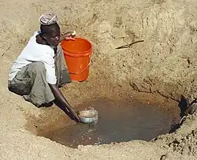
Etwa zwei bis drei Milliarden Menschen haben keinen Zugang zu sauberem Trinkwasser.[54][55] Unzureichende Versorgung mit sauberem Trinkwasser ist in Entwicklungsländern die Hauptursache für Krankheiten und Todesfälle, vor allem für hohe Kindersterblichkeit.[56] Zahlreiche Entwicklungsprojekte widmen sich der Lösung dieses Problems, doch zwei bis drei Milliarden Menschen werden von keinem dieser Projekte erreicht. Ein bedeutendes Hindernis stellt die Bindung der Förderung seitens der EU-Entwicklungshilfe an private Wasserversorgungsunternehmen dar. Selbsthilfe durch kommunale und genossenschaftliche Lösungen bleibt ohne Förderung.[57] Eine einfache Notwasseraufbereitung für Krisengebiete oder Slums wurde in der Schweiz mit dem Projekt SODIS entwickelt, dieses Verfahren wird von der WHO zur Trinkwasserdesinfektion auf Haushaltsebene empfohlen.[58]
Umweltaspekte
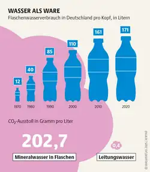
Trinkwasser aus dem Hahn verursacht bis zu tausendmal weniger Umweltbelastungen als Mineralwasser, wie in Vergleichsuntersuchungen (Ökobilanz) für die Schweiz[59][60] und Deutschland[61] festgestellt wurde. Belastende Aspekte für die Ökobilanz des Trinkwassers sind die Infrastruktur für Aufbereitung und Verteilung sowie der Energieverbrauch für das Pumpen.[62] Zur Gewinnung von Trinkwasser wird Energie aufgewendet. Insofern gehört zum Umweltschutz die Vermeidung der Verschwendung von Trinkwasser. Soll Trinkwasser durch Betriebswasser (beispielsweise Niederschlagswasser, Grauwasser) substituiert werden, müssen bestimmte Vorkehrungen getroffen werden, um eine Gefährdung des Trinkwassers und der Nutzer auszuschließen. Entsprechende Anforderungen an Planung, Errichtung und Betrieb von Betriebswasseranlagen werden in der Richtlinie VDI 2070[63] beschrieben.
Trinkwasserinstallationen
Als Trinkwasserinstallation (Hausinstallation) wird im Allgemeinen der Teil des Trinkwassernetzes ab dem Hauptwasserzähler eines Gebäudes bis zu den Entnahmearmaturen bezeichnet. Je nach Zusammenhang können die Anlagenteile ab der Wasser-Hauseinführung eines Gebäudes oder ab der Grundstücksgrenze zur Hausinstallation gezählt werden. In der Regel gehört die Leitungsanlage bis zum Wasserzähler jedoch dem Wasserversorgungsunternehmen.
Zur Kennzeichnung von Kalt-, Warm- und Zirkulationsleitungen siehe Wasserleitung#Kennzeichnung.
Hygienische Anforderungen
Trinkwasser ist in der Regel nicht steril und darf eine bestimmte Konzentration von Bakterien enthalten. Wenn das Wasser über längere Zeit in den Leitungen steht (Stagnation), kann es zu einer erhöhten Vermehrung von gesundheitsgefährdenden Keimen wie Legionellen kommen. Dies gilt insbesondere, wenn sich das Wasser dabei über die Temperatur von 8 bis 10 °C hinaus erwärmt, mit der es im Regelfall von der kommunalen Trinkwasserversorgung ins Haus gelangt. Zur Vermeidung der Stagnation wird in der Richtlinie VDI/DVGW 6023 „Hygiene in Trinkwasser-Installationen; Anforderungen an Planung, Ausführung, Betrieb und Instandhaltung“ empfohlen, Wasser in Trinkwasserinstallationen wenigstens alle 72 Stunden einmal vollständig auszutauschen. Betreiber und Nutzer von Trinkwasserinstallationen sollten daher bei längerer Abwesenheit dafür sorgen, dass jede Trinkwasserzapfstelle (Handwaschbecken, WC, Dusche) regelmäßig gespült wird. Dies kann organisatorisch (durch manuelles Öffnen der Zapfstellen) oder technisch geregelt werden (automatische Spülarmaturen). Nach der Trinkwasserverordnung ist der „Unternehmer und sonstige Inhaber“ der Trinkwasserinstallation haftbar für Schäden, die durch einen nicht bestimmungsgemäßen Betrieb von Trinkwasserinstallationen entstehen. Von ihm ist eine Gefährdungsanalyse zu veranlassen.
In Trinkwassernetzen, die nach den anerkannten Regel der Technik wie der DIN 1988 gebaut und betrieben werden, haben stagnierende Bedingungen nur einen untergeordneten Einfluss auf die Koloniezahlerhöhung.[64]
Prüfzeichen für Trinkwasserinstallationen
Nach der deutschen Trinkwasserverordnung (TrinkwV 2001) und der „Verordnung über Allgemeine Bedingungen für die Versorgung mit Wasser“ (AVB-WasserV) dürfen nur Produkte für Trinkwasserinstallationen verwendet werden, die ein DVGW oder DIN-DVGW Prüfzeichen tragen.[65]
Betriebstemperaturen
Die DIN EN 806-2 stellt fest, dass aus hygienischen Gründen 30 Sekunden nach dem Öffnen einer Zapfstelle die anliegende Temperatur des kalten Wassers 25 °C nicht übersteigen und die des warmen Wassers 60 °C nicht unterschreiten sollte, sofern lokale Richtlinien dem nicht entgegenstehen. Zusätzlich sollte das Warmwasser an jeder Zapfstelle auf 70 °C erwärmt werden können, um Leitungen und Armaturen thermisch zu desinfizieren. Hierdurch soll in erster Linie die Vermehrung von Legionellen-Bakterien unterbunden werden.
Die nationale Ergänzungsnorm DIN 1988-200 nennt ähnliche Werte, fordert diese jedoch explizit. Demnach darf 30 Sekunden nach dem Öffnen einer Zapfstelle für Kaltwasser die Temperatur 25 °C nicht übersteigen und die Warmwassertemperatur muss mindestens 55 °C erreichen. In Technikzentralen und Installationsschächten soll die Temperatur des Kaltwassers möglichst 25 °C nicht überschreiten.
Zum Schutz vor Verbrühung soll das Leitungswasser je nach Nutzergruppe jedoch in öffentlichen Gebäuden mit höchstens 38 – 45 °C aus der Entnahmestelle treten.[66] Wasser mit über 60 °C kann innerhalb von Sekunden zu Verbrühungen führen, während dies bei 50 °C heißem Wasser erst nach etwa 2 Minuten der Fall ist.[67]
Absperrbereiche
Nach der DIN EN 806-2 müssen alle Verbrauchs- und Verteilungsleitungen absperrbar und entleerbar sein. Jeder Gebäudeteil mit eigener Wasserzuführung muss absperrbar sein. Ebenso müssen die Trinkwasserleitungen zu jedem Stockwerk und zu jeder Wohnung einzeln absperrbar sein. Die Absperrarmaturen sollten gut zugänglich in der Nähe der Eintrittsstelle angeordnet werden. Im Besonderen sollen alle Leitungen, die von der Hauptleitung abzweigen und mehrere Nutzungseinheiten gemeinsam versorgen, eine Absperrung erhalten. Zusätzlich muss jeder Waschmaschinenanschluss, Spülkasten, Wasserbehälter, Wassererwärmer und jeder sonstige Apparat eine eigene Absperrarmatur erhalten.
Die DIN 1988-200 verlangt mindestens ein Absperrventil mit Entleerungshahn nach dem Wasserzähler und weitere Absperrmöglichkeiten, wenn dies zur Wartung der Leitungsanlage erforderlich ist. An jedem Zapfhahn und Geräteablauf muss eine ausreichende Entwässerungseinrichtung (Abwasseranschluss) vorhanden sein. Absperr-, Entleerungs-, Sicherheits- und Sicherungsarmaturen müssen leicht bedienbar und zugänglich angebracht sein.
Selten benutzte oder durch Frost gefährdete Leitungen, wie solche zu Nebengebäuden, Garten- und Hofbereichen, müssen direkt am Abzweig von der Hauptleitung eine Absperr- und Entleerungsarmatur erhalten und sollten gekennzeichnet werden.
Kaltwasser-Zuleitungen
Nach der DIN 1998-200 sollen die Zuleitungen zu einzelnen Entnahmearmaturen so kurz wie möglich ausgeführt werden und höchstens ein Volumen von 3 l enthalten.
Siehe auch
Literatur
- Heinrich Sontheimer, Paul Spindler, Ulrich Rohmann: Wasserchemie für Ingenieure. DVGW-Forschungsstelle am Engler-Bunte-Institut der Universität Karlsruhe / ZfGW-Verlag, Frankfurt am Main 1980, ISBN 3-922671-00-4.
- K-D. Henning, J. Degel, J. Klein, K. Knoblauch: Kohlenstoffhaltige Filtermaterialien für die Ein- und Mehrschichtfilteration. In: gwf-Wasser/Abwasser. Band 127, H. 6, 1986, S. 275–282.
- Thomas Rätz: Trinkwasser aus Waldgebieten. Wohlfahrtsökonomische Analyse am Beispiel des Pfälzerwaldes. (= Schriften aus dem Institut für Forstökonomie der Universität Freiburg. Band 6). Institut für Forstökonomie, Freiburg im Breisgau 1996, ISBN 3-9803697-5-7. (Zugleich Dissertation an der Universität Freiburg im Breisgau 1996).
- Thomas Kluge, Engelbert Schramm: Wassernöte. Zur Geschichte des Trinkwassers. 2. Auflage. Volksblatt, Köln 1988, ISBN 3-923243-38-3.
- Rolf Seyfarth u. a.: Kleines Lexikon zur Trinkwasser-Beschaffenheit. Oldenbourg, München 2000, ISBN 3-486-26474-5.
- Hans W. Möller: Trinkwassergefährdung und Trinkwasserpolitik. Eine marktwirtschaftliche Konzeption des Trinkwasserschutzes. Nomos, Baden-Baden 2002, ISBN 3-7890-6378-9. (Zugleich Dissertation an der Universität Hohenheim 1999).
- Karl Höll, Andreas Grohmann: Wasser – Nutzung im Kreislauf: Hygiene, Analyse und Bewertung. 8. Auflage. de Gruyter, Berlin / New York 2002, ISBN 3-11-012931-0.
- Hermann H. Dieter: Kommentar zur Bewertung der Anwesenheit nicht oder nur teilbewertbarer Stoffe im Trinkwasser aus gesundheitlicher Sicht. In: Bundesgesundheitsblatt – Gesundheitsforschung – Gesundheitsschutz. Band 46, 2003, S. 245–248.
- Giulio Morteani, Lorenz Eichinger: Arsen im Trinkwasser und Dearsenierung. Gesetzliche Vorschriften, Toxikologie, Hydrochemie. In: Wasser, Luft, Boden. Band 48, Nr. 6, 2003, S. 24–26, ISSN 0938-8303.
- Martin Exner: Die infektionsepidemiologische Bedeutung von Helicobacter pylori mit besonderer Berücksichtigung von unbehandelten Brunnenwasser als Infektionsreservoir. In: Hygiene und Medizin. Band 29, Nr. 11, 2004, S. 418–422, ISSN 0172-3790.
- Steffen Niemann, Olivier Graefe: Wasserversorgung in Afrika. In: Geographische Rundschau. Band 58, Nr. 2, 2006, S. 30–39. ISSN 0016-7460.
- Thomas Chatel: Wasserpolitik in Spanien – eine kritische Analyse. In: Geographische Rundschau. Band 58, Nr. 2, 2006, S. 20–29. ISSN 0016-7460.
- Thomas Kluge, Jens Libbe (Hrsg.): Transformation netzgebundener Infrastruktur. Strategien für Kommunen am Beispiel Wasser. (= Difu-Beiträge zur Stadtforschung. Band 45). Berlin 2006, ISBN 3-88118-411-2.
- Thoralf Schlüter: Trinkwasserversorgung im internationalen Vergleich. Versorgungssituation, wasserwirtschaftliche Strukturen und Trinkwasserpreise. Diplomica, Hamburg 2006, ISBN 3-8324-9339-5.
- Hans-Jürgen Leist: Wasserversorgung in Deutschland – Kritik und Lösungsansätze. Oekom, München 2007, ISBN 978-3-86581-078-6.
- Jens Libbe, Ulrich Scheele: Räumliche Aspekte von Qualitäts- und Versorgungsstandards in der deutschen Wasserwirtschaft. In: Bundesamt für Bauwesen und Raumordnung (Hrsg.): Infrastruktur und Daseinsvorsorge in der Fläche. (= Informationen zur Raumentwicklung. Heft 1/2, 2008), S. 101–112, ISSN 0303-2493.
- Matthias Nast: Trinkwasser – Unser wichtigstes Lebensmittel. Ratgeber der Stiftung für Konsumentenschutz. Ott, Bern 2010, ISBN 978-3-7225-0118-5.
- Matthias Maier, Volker Steck, Matthias Maier (Hrsg.): Trinkwasser: Lebensgrundlage einer jungen Stadt. (= Häuser- und Baugeschichte. Band 13). herausgegeben vom Stadtarchiv Karlsruhe und von den Stadtwerken Karlsruhe. Info-Verlag, Karlsruhe 2015, ISBN 978-3-88190-830-6.
Weblinks
- Literatur von und über Trinkwasser im Katalog der Deutschen Nationalbibliothek
- Forum Trinkwasser und seine Qualität in Deutschland
- Ratgeber des Umweltbundesamtes Trink was – Trinkwasser aus dem Hahn (PDF-Datei; 457 kB)
- Trinkwasserqualität in der Schweiz
- Trinkwasser – Informationen des Bundesamts für Lebensmittelsicherheit und Veterinärwesen
- Heiko Wimmen: Konfliktstoff Wasser: Erbitterter Streit im Nahen Osten (Deutschlandfunk, 22. März 2006 – auch als Audio-on-Demand)
- srf.ch: Bericht des Bafu – Trinkwasser ist vielerorts ungenügend geschützt (23. Januar 2019)
- Spektrum.de: Sauberes Wasser macht immer mehr Aufwand 12. November 2019
Einzelnachweise
- ↑ Die Karte beruht auf der Quelle Where Is the World's Most Dangerous Drinking Water? (kommerzielle Webseite qssuplies.co.uk, Stand März 2023), die Angaben des US-amerikanischen Center for Disease Control and Prevention (CDC) (Destinations list, wwwnc.cdc.gov) und des Environmental Performance Index (EPI) (Unsafe drinking water, epi.yale.edu, Stand 2022) verwendet. Die Einschätzungen des EPI beruhen wiederum auf Daten der Global Burden of Disease (GBD) study des Institute for Health Metrics and Evaluation (IHME)
- ↑ Daseinsvorsorge – Begriff und Rechtsgrundlagen. (PDF) In: bundestag.de. 2024, abgerufen am 8. Mai 2025.
- ↑ twin Nr. 9, DVGW Deutscher Verein des Gas- und Wasserfaches e. V., Bonn.
- ↑ Die EU- und WHO-Richtlinien für Trinkwasser legen teilweise andere Parameter zugrunde und haben Empfehlungscharakter, siehe Vergleich der Trinkwassernormen der WHO, der EU und Deutschlands.
- ↑ who.int ( vom 4. April 2004 im Internet Archive)
- ↑ Sollen wir täglich 2,5 Liter Wasser trinken? In: Telepolis. Abgerufen am 21. Juli 2026.
- ↑ Mythen, an die selbst Mediziner glauben. In: Spiegel Online.
- ↑ Dubai will Strom- und Wasser-Verbrauch verringern. In: Dubai Report. 18. Februar 2008, abgerufen am 6. März 2011.
- ↑ Abu Dhabi: Wasserverbrauch der VAE, Stand 2006 ( vom 12. November 2011 im Internet Archive)
- ↑ Jackson Lord, Ashley Thomas, Neil Treat, Matthew Forkin, Robert Bain, Pierre Dulac, Cyrus H. Behroozi, Tilek Mamutov, Jillia Fongheiser, Nicole Kobilansky, Shane Washburn, Claudia Truesdell, Clare Lee, Philipp H. Schmaelzle: Global potential for harvesting drinking water from air using solar energy. In: Nature. 598. Jahrgang, Nr. 7882, Oktober 2021, ISSN 1476-4687, S. 611–617, doi:10.1038/s41586-021-03900-w (englisch).
- ↑ Scott Jasechko, Debra Perrone: Global groundwater wells at risk of running dry. In: Science. 372. Jahrgang, Nr. 6540, 23. April 2021, ISSN 0036-8075, S. 418–421, doi:10.1126/science.abc2755 (englisch, sciencemag.org).
- ↑ Öko-Irrsinn Mineralwasser. In: Der Spiegel. Nr. 39, 22. September 2014, S. 44.
- ↑ Meike von Lojewski Trinkwasser in Spanien – wie geniessbar ist es? ( vom 20. Juni 2021 im Internet Archive) (20. Juli 2015)
- ↑ Axel Dorloff: Wasser in China – Massive Verschmutzung, vor allem im Grundwasser. In: deutschlandfunk.de. 19. Mai 2016, abgerufen am 6. Januar 2020.
- ↑ D. Wang, X. Chen, J. Zhang, Y. Zhong, R. Liu, P. Ding: Geographic information system-based health risk assessment of rural drinking water in Central China: a case study of You County, Hunan. In: Environ Monit Assess. Band 193, Nr. 2, 27. Jan 2021, S. 89. PMID 33501618
- ↑ Übersicht: Schadstoffe im Trinkwasser
- ↑ Video heute: Chemische Abfälle im Trinkwasser (16. März 2013, 19:09 Uhr, 2:00 Min.) in der ZDFmediathek, abgerufen am 11. Februar 2014. (offline)
- ↑ Angelique Beldner: Verbot kommt im Herbst – Krebserregendes Pestizid im Schweizer Trinkwasser. In: srf.ch. 20. Juni 2019, abgerufen am 22. Juni 2019.
- ↑ Fritz H. Frimmel: Heil-Lasten. Springer-Verlag, 2006, ISBN 3-540-33638-9, S. 207 (eingeschränkte Vorschau in der Google-Buchsuche).
- ↑ Barium im Trinkwasser. 14. Juli 2024, abgerufen am 14. Juli 2024.
- ↑ Neue Gefahrenklassen 2023. ECHA, abgerufen am 8. Mai 2025.
- ↑ Umweltkarte „Blei im Trinkwasser“ der Stiftung Warentest
- ↑ Viviane Manz: Marode Infrastruktur – Raus mit dem Blei – der Kampf um sauberes Trinkwasser in den USA. In: srf.ch. 21. Mai 2021, abgerufen am 21. Mai 2021.
- ↑ M. J. Brown, S. Margolis: Lead in drinking water and human blood lead levels in the United States. In: MMWR. Suppl. 61, Nr. 4, 10. Aug 2012, S. 1–9. PMID 22874873
- ↑ Manouchehr Amini, Kim Mueller, Karim C. Abbaspour, Thomas Rosenberg, Majid Afyuni, Klaus N. Møller, Mamadou Sarr, C. Annette Johnson: Statistical Modeling of Global Geogenic Fluoride Contamination in Groundwaters. In: Environmental Science & Technology. Band 42, 2008, S. 3662–3668, doi:10.1021/es071958y.
- ↑ Manouchehr Amini, Karim C. Abbaspour, Michael Berg, Lenny Winkel, Stephan J. Hug, Eduard Hoehn, Hong Yang, C. Annette Johnson: Statistical Modeling of Global Geogenic Arsenic Contamination in Groundwater. In: Environmental Science & Technology. Band 42, 2008, S. 3669–3675, doi:10.1021/es702859e.
- ↑ L. Rodriguez-Lado, G. Sun, M. Berg, Q. Zhang, H. Xue, Q. Zheng, C. A. Johnson: Groundwater Arsenic Contamination Throughout China. In: Science. Band 341, 2013, S. 866–868, doi:10.1126/science.1237484.
- ↑ Groundwater Assessment Platform (GAP)
- ↑ Focus: Uran im Trinkwasser alarmiert Behörden. 5. August 2008
- ↑ Uran in Trink- und Mineralwasser. In: Gesundheitsamt Bremen. Abgerufen am 18. April 2016.
- ↑ Ein Beitrag zu Vorkommen und Herkunft von Uran in deutschen Mineral- und Leitungswässern
- ↑ E. Stalder, A. Blanc, M. Haldimann, V. Dudler: Occurrence of uranium in Swiss drinking water. In: Chemosphere. Band 86, Nr. 6, Februar 2012, ISSN 0045-6535, S. 672–679, doi:10.1016/j.chemosphere.2011.11.022 (englisch).
- ↑ Vorkommen von Uran in Schweizer Trinkwasser. Lebensmittelsicherheit. In: Bundesamt für Gesundheit (Hrsg.): BAG Bulletin. Nr. 12/12, 19. März 2012, ISSN 1420-4266, S. 206–207 (archive.org [PDF; abgerufen am 8. Juni 2017]).
- ↑ Verordnung des EDI über Trinkwasser sowie Wasser in öffentlich zugänglichen Bädern und Duschanlagen (TBDV). In: Fedlex. Abgerufen am 8. Mai 2025.
- ↑ Leena Maunula, Ilkka T. Miettinen, Carl-Henrik von Bonsdorff: Norovirus Outbreaks from Drinking Water. In: Emerging Infectious Diseases. Band 11, 2005, S. 1716–1721, doi:10.3201/eid1111.050487, PMC 3367355 (freier Volltext).
- ↑ VKU FAQ ( vom 5. Mai 2014 im Internet Archive).
- ↑ Unterschiede beim Wasserpreis – Augsburg billig, Essen teuer.
- ↑ Uwe Ritzer: Wasser muss teurer werden, Süddeutsche Zeitung, 12. August 2026, S. 13.
- ↑ Robert Bösiger: Wasser kostet, aber nicht überall gleich viel. In: Blick. Abgerufen am 8. Juni 2017. (gemäss Zitat Max Maurer, Leiter Siedlungswasserwirtschaft, Wasserforschungsinstitut Eawag)
- ↑ St.Galler Trinkwasser – der beste Durstlöscher. Stadt St. Gallen, abgerufen am 8. Juni 2017.
- ↑ Wasserversorgung. Gemeinde Altdorf, archiviert vom am 11. Februar 2006; abgerufen am 8. Juni 2017.
- ↑ Gebührenvergleichs-Website des Preisüberwachers. Eidgenössisches Departement für Wirtschaft, Bildung und Forschung, abgerufen am 8. Juni 2017.
- ↑ Markus Merk (AGW): KIT – AGW: WOKAM. 10. September 2017, abgerufen am 8. Dezember 2017 (deutsch).
- ↑ Nico Goldscheider, Neven Kresic: Karst hydrogeology home. Abgerufen am 8. Dezember 2017.
- ↑ BGR – WHYMAP. Abgerufen am 8. Dezember 2017 (englisch).
- ↑ BGR – WHYMAP – BGR, KIT, IAH, and UNESCO presented new World Karst Aquifer Map. Abgerufen am 8. Dezember 2017 (englisch).
- ↑ Wasserqualität – Erläuterung zu einzelnen Parametern, abgerufen am 21. November 2014.
- ↑ Dirk Asendorpf: Auf die Pore kommt es an. In: Zeit Online. 13. Februar 2009, abgerufen am 21. November 2014.
- ↑ UBA – Empfehlungen zur Reduzierung von Mikroverunreinigungen in den Gewässern, April 2018, abgerufen am 16. November 2024.
- ↑ Trinkwasser: Aus dem Rohr statt aus der Plastikflasche. Abgerufen am 21. November 2014.
- ↑ Hrsg. DVGW e. V.: Wassertransport und -verteilung. Oldenbourg Industrieverlag, München 1999, ISBN 3-486-26219-X, S. 3–5.
- ↑ Jede fünfte Wasserprobe überschreitet Grenzwert. ( vom 2. April 2015 im Internet Archive) auf help-ORF.at vom 19. März 2015.
- ↑ Trinkwasser wird jetzt durch Verfassung geschützt. Abgerufen am 2. Juli 2019.
- ↑ Ausreichend Wasser in bester Qualität | Bundesregierung. 16. August 2023, abgerufen am 14. Juli 2025.
- ↑ Wasserknappheit | Oxfam Deutschland. 31. Oktober 2023, abgerufen am 14. Juli 2025.
- ↑ Schmutziges Wasser: 1.000 Kindern sterben täglich an den Folgen | Presse. 19. März 2015, abgerufen am 14. Juli 2025.
- ↑ Konzept & Idee | EMAS International. Abgerufen am 14. Juli 2025.
- ↑ Einfache Methode zur Trinkwasseraufbereitung: SODIS | Ingenieurbüro für Energieberatung in Taucha, Leipzig. Abgerufen am 14. Juli 2025.
- ↑ Ökobilanz von Trinkwasser – Hahnenwasser – Mineralwasser im Vergleich. In: ESU-services. Abgerufen am 12. Mai 2024 (deutsch).
- ↑ Ökobilanz Trinkwasser: Analyse und Vergleich mit Mineralwasser sowie anderen Getränken. (PDF) Abgerufen am 12. Mai 2024.
- ↑ Ökobilanz von Trinkwasser und Mineralwasser in Deutschland. (PDF) Abgerufen am 12. Mai 2024.
- ↑ N. Jungbluth: Vergleich der Umweltbelastungen von Hahnenwasser und Mineralwasser. In: Gas, Wasser, Abwasser. Vol. 2006, Nr. 3, S. 215–219.
- ↑ VDI 2070
- ↑ DVGW e. V. (Hrsg.): DVGW-Information Wasser Nr. 81 Planung, Bau und Betrieb von Wasserverteilungssystemen unter dem Blickwinkel der Bewertung und Vermeidung von Aufkeimungserscheinungen. Wirtschafts- und Verlagsgesellschaft Gas und Wasser, 2013, ISSN 0176-3504.
- ↑ Tino Reinhard: Bedeutung und Inhalt der DIN EN 1717 – Systemnorm regelt europaweit den Trinkwasserschutz. In: IKZ Haustechnik. Heft 13, 2006, S. 32ff.
- ↑ Die DIN EN 806-2 fordert eine Höchsttemperatur von 45 °C für öffentliche Gebäude. In Altersheimen und Einrichtungen für Kinder sollten allgemein 43 °C und in Duschen 38 °C nicht überschritten werden. Die VDI 3818 empfiehlt generell 40 °C für öffentliche Bäder und Toiletten.
- ↑ FAQ Thermostatic mixing valves – Why is it important to have a thermostatic mixing valve? ( vom 20. September 2018 im Internet Archive), ESBE AB, Sweden
- Wikipedia:Gesprochener Artikel
- Trinkwasser
- Wasserqualität
- Getränk
- Wasser (Hydrologie)